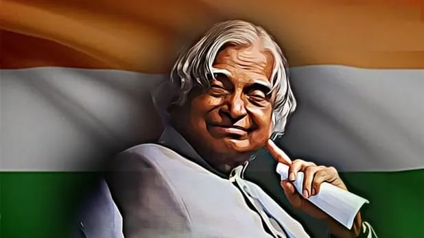

Dr.A.P.J.Abdul Kalam

The Missile Man of India
A.P.J. Abdul Kalam, in full ABul Pakir JainulaAbdeen Abdul Kalam,(born October 15, 1931, Rameswaram,
India—died July 27, 2015, Shillong),
Indian scientist and politician who played a leading role in the
development of India’s missile and nuclear weapons programs.
He was president of India from 2002 to 2007.
"look at the sky. We are not alone. The whole universe is friendly to us and conspires only to give the best to those who dream and work."
-- Abdul Kalam
A very simple person who lived an unpretentious lifestyle. He had a keen interest in literature and wrote
poems.
He never married. He always faced media himself for his failures while let others address for the success.
He died while delivering a lecture at the IIM.
significant events in his life are as follows:
- 1931: Born in Rameswaram, Tamil Nadu.
- 1954: Graduated in Physics from University of Madras.
- 1960: Graduated in Aerospace Engineering from Madras Institute of Technology.
- 1961: Joined DRDO as a scientist.
- 1969: Joined Space Research at ISRO.
- 1981: Awarded Padma Bhushan.
- 1990: Awarded Padma Vibhushan.
- 1992: Chief Advisor for the India's Nuclear Program.
- 1997: Awarded Bharat Ratna.
- 2002: Became 11th President of India.
- 2015: The People's President passes away while doing what he loved the most, addressing students.
He wrote many books in his life. His is most popular work is the novel "Wings of Fire"
For more information, click Here DR.Abdul Kalam